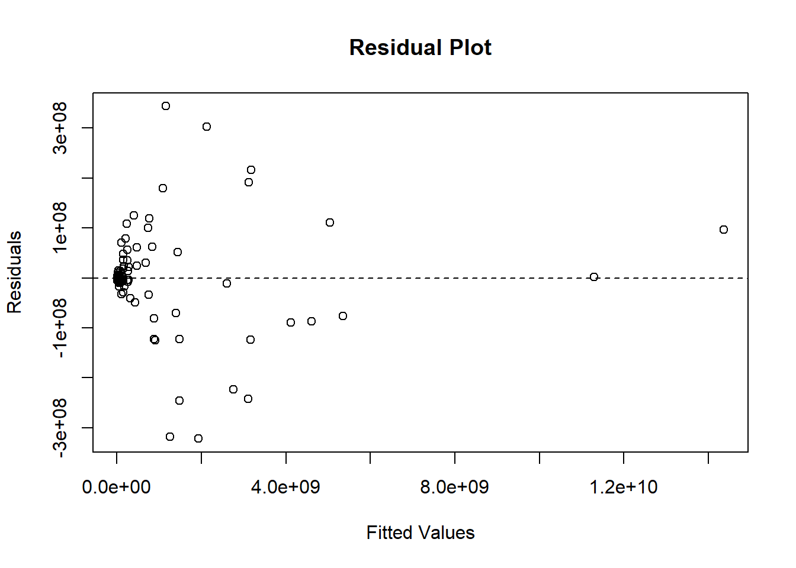

library(tidyverse)Warning: package 'tidyverse' was built under R version 4.5.3Warning: package 'ggplot2' was built under R version 4.5.3Warning: package 'tidyr' was built under R version 4.5.3Warning: package 'readr' was built under R version 4.5.3Warning: package 'dplyr' was built under R version 4.5.3Warning: package 'lubridate' was built under R version 4.5.2── Attaching core tidyverse packages ──────────────────────── tidyverse 2.0.0 ──
✔ dplyr 1.2.0 ✔ readr 2.2.0
✔ forcats 1.0.0 ✔ stringr 1.5.1
✔ ggplot2 4.0.2 ✔ tibble 3.3.0
✔ lubridate 1.9.4 ✔ tidyr 1.3.2
✔ purrr 1.1.0
── Conflicts ────────────────────────────────────────── tidyverse_conflicts() ──
✖ dplyr::filter() masks stats::filter()
✖ dplyr::lag() masks stats::lag()
ℹ Use the conflicted package (<http://conflicted.r-lib.org/>) to force all conflicts to become errorsdata <- read.csv("C:/Users/akbar/Downloads/LossFromNetCrime.csv",
stringsAsFactors = FALSE)
# Convert all complaint/loss columns except country to numeric
num_cols <- names(data)[names(data) != "Country"]
data[num_cols] <- lapply(data[num_cols], function(x) as.numeric(gsub(",", "", x)))
str(data)'data.frame': 117 obs. of 13 variables:
$ Country : chr "PR" "PS" "PT" "PY" ...
$ X2019_Complaints: num 655 1784 1119 1913 5503 ...
$ X2019_Losses : num 5929974 22483591 13870074 10967865 48101706 ...
$ X2020_Complaints: num 1338 2890 2020 2992 7390 ...
$ X2020_Losses : num 7209755 25423219 12391290 13815152 81178182 ...
$ X2021_Complaints: num 1785 3352 2102 3188 10164 ...
$ X2021_Losses : num 9.46e+06 4.89e+07 1.82e+07 2.67e+07 1.32e+08 ...
$ X2022_Complaints: num 1594 3210 1918 3768 10042 ...
$ X2022_Losses : num 1.72e+07 5.78e+07 3.09e+07 4.01e+07 1.87e+08 ...
$ X2023_Complaints: num 1817 3378 2178 3487 11034 ...
$ X2023_Losses : num 2.10e+07 6.93e+07 2.87e+07 3.36e+07 2.44e+08 ...
$ X2024_Complaints: num 1974 3811 2209 2678 12071 ...
$ X2024_Losses : num 3.15e+07 6.60e+07 4.02e+07 4.52e+07 2.81e+08 ...summary(data) Country X2019_Complaints X2019_Losses X2020_Complaints
Length:117 Min. : 216 Min. :2.498e+06 Min. : 362
Class :character 1st Qu.: 1119 1st Qu.:1.179e+07 1st Qu.: 1937
Mode :character Median : 5156 Median :4.571e+07 Median : 8187
Mean : 24650 Mean :2.366e+08 Mean : 43249
3rd Qu.: 16525 3rd Qu.:2.025e+08 3rd Qu.: 28232
Max. :449305 Max. :3.303e+09 Max. :796395
X2020_Losses X2021_Complaints X2021_Losses X2022_Complaints
Min. :2.673e+06 Min. : 391 Min. :4.363e+06 Min. : 458
1st Qu.:1.382e+07 1st Qu.: 2102 1st Qu.:2.286e+07 1st Qu.: 1918
Median :4.529e+07 Median : 9415 Median :1.000e+08 Median : 8819
Mean :2.812e+08 Mean : 45731 Mean :4.713e+08 Mean : 42984
3rd Qu.:2.125e+08 3rd Qu.: 30367 3rd Qu.:4.003e+08 3rd Qu.: 29642
Max. :3.907e+09 Max. :940125 Max. :6.467e+09 Max. :769205
X2022_Losses X2023_Complaints X2023_Losses X2024_Complaints
Min. :6.648e+06 Min. : 400 Min. :8.907e+06 Min. : 330
1st Qu.:3.350e+07 1st Qu.: 2280 1st Qu.:4.132e+07 1st Qu.: 2253
Median :1.276e+08 Median : 9527 Median :1.631e+08 Median : 9251
Mean :7.196e+08 Mean : 45505 Mean :8.590e+08 Mean : 50734
3rd Qu.:6.055e+08 3rd Qu.: 31255 3rd Qu.:6.421e+08 3rd Qu.: 31525
Max. :1.030e+10 Max. :876894 Max. :1.192e+10 Max. :946966
X2024_Losses
Min. :9.793e+06
1st Qu.:4.788e+07
Median :1.876e+08
Mean :1.014e+09
3rd Qu.:8.030e+08
Max. :1.446e+10 # Keep only rows with non-missing 2024 losses
data <- data[!is.na(data$X2024_Losses), ]
set.seed(123)
n <- nrow(data)
train_index <- sample(1:n, size = floor(0.8 * n))
train <- data[train_index, ]
test <- data[-train_index, ]
# Variables used in the model
model_vars <- c(
"X2019_Complaints","X2019_Losses",
"X2020_Complaints","X2020_Losses",
"X2021_Complaints","X2021_Losses",
"X2022_Complaints","X2022_Losses",
"X2023_Complaints","X2023_Losses",
"X2024_Losses"
)
# Keep only rows without missing values
train_model <- train[complete.cases(train[, model_vars]), ]
test_model <- test[complete.cases(test[, model_vars]), ]
nrow(train_model)[1] 93nrow(test_model)[1] 24model <- lm(X2024_Losses ~ X2019_Complaints + X2019_Losses +
X2020_Complaints + X2020_Losses +
X2021_Complaints + X2021_Losses +
X2022_Complaints + X2022_Losses +
X2023_Complaints + X2023_Losses,
data = train_model)
summary(model)
Call:
lm(formula = X2024_Losses ~ X2019_Complaints + X2019_Losses +
X2020_Complaints + X2020_Losses + X2021_Complaints + X2021_Losses +
X2022_Complaints + X2022_Losses + X2023_Complaints + X2023_Losses,
data = train_model)
Residuals:
Min 1Q Median 3Q Max
-321874006 -9915622 -1716146 21722915 343895159
Coefficients:
Estimate Std. Error t value Pr(>|t|)
(Intercept) 2.187e+06 1.241e+07 0.176 0.860517
X2019_Complaints 4.788e+02 2.592e+03 0.185 0.853928
X2019_Losses -2.692e-01 5.359e-01 -0.502 0.616803
X2020_Complaints 1.089e+04 2.420e+03 4.499 2.23e-05 ***
X2020_Losses 1.352e+00 3.368e-01 4.014 0.000132 ***
X2021_Complaints 1.471e+03 1.525e+03 0.964 0.337771
X2021_Losses 4.631e-01 1.826e-01 2.535 0.013130 *
X2022_Complaints -5.310e+03 2.005e+03 -2.648 0.009701 **
X2022_Losses 9.396e-01 1.303e-01 7.209 2.52e-10 ***
X2023_Complaints -6.364e+03 1.465e+03 -4.344 3.98e-05 ***
X2023_Losses -2.637e-01 1.343e-01 -1.964 0.052954 .
---
Signif. codes: 0 '***' 0.001 '**' 0.01 '*' 0.05 '.' 0.1 ' ' 1
Residual standard error: 105300000 on 82 degrees of freedom
Multiple R-squared: 0.9978, Adjusted R-squared: 0.9976
F-statistic: 3795 on 10 and 82 DF, p-value: < 2.2e-16predictions <- predict(model, newdata = test_model)
rmse <- sqrt(mean((predictions - test_model$X2024_Losses)^2))
rmse[1] 406916980str(data)'data.frame': 117 obs. of 13 variables:
$ Country : chr "PR" "PS" "PT" "PY" ...
$ X2019_Complaints: num 655 1784 1119 1913 5503 ...
$ X2019_Losses : num 5929974 22483591 13870074 10967865 48101706 ...
$ X2020_Complaints: num 1338 2890 2020 2992 7390 ...
$ X2020_Losses : num 7209755 25423219 12391290 13815152 81178182 ...
$ X2021_Complaints: num 1785 3352 2102 3188 10164 ...
$ X2021_Losses : num 9.46e+06 4.89e+07 1.82e+07 2.67e+07 1.32e+08 ...
$ X2022_Complaints: num 1594 3210 1918 3768 10042 ...
$ X2022_Losses : num 1.72e+07 5.78e+07 3.09e+07 4.01e+07 1.87e+08 ...
$ X2023_Complaints: num 1817 3378 2178 3487 11034 ...
$ X2023_Losses : num 2.10e+07 6.93e+07 2.87e+07 3.36e+07 2.44e+08 ...
$ X2024_Complaints: num 1974 3811 2209 2678 12071 ...
$ X2024_Losses : num 3.15e+07 6.60e+07 4.02e+07 4.52e+07 2.81e+08 ...colSums(is.na(data)) Country X2019_Complaints X2019_Losses X2020_Complaints
1 0 0 0
X2020_Losses X2021_Complaints X2021_Losses X2022_Complaints
0 0 0 0
X2022_Losses X2023_Complaints X2023_Losses X2024_Complaints
0 0 0 0
X2024_Losses
0 # Compare training vs test error
train_predictions <- predict(model, newdata = train_model)
train_rmse <- sqrt(mean((train_predictions - train_model$X2024_Losses)^2))
test_rmse <- sqrt(mean((predictions - test_model$X2024_Losses)^2))
train_rmse[1] 98847983test_rmse[1] 406916980# Looking at residuals to help with error analysis
plot(model$fitted.values, model$residuals,
xlab = "Fitted Values",
ylab = "Residuals",
main = "Residual Plot")
abline(h = 0, lty = 2)
# Checking actual vs predicted plots
results <- data.frame(
Actual = test_model$X2024_Losses,
Predicted = predictions
)
head(results) Actual Predicted
1 31545772 22829813
2 66002407 87898101
10 448223952 470210159
11 145551079 205914199
18 11161782401 9824492611
19 303148050 321448290